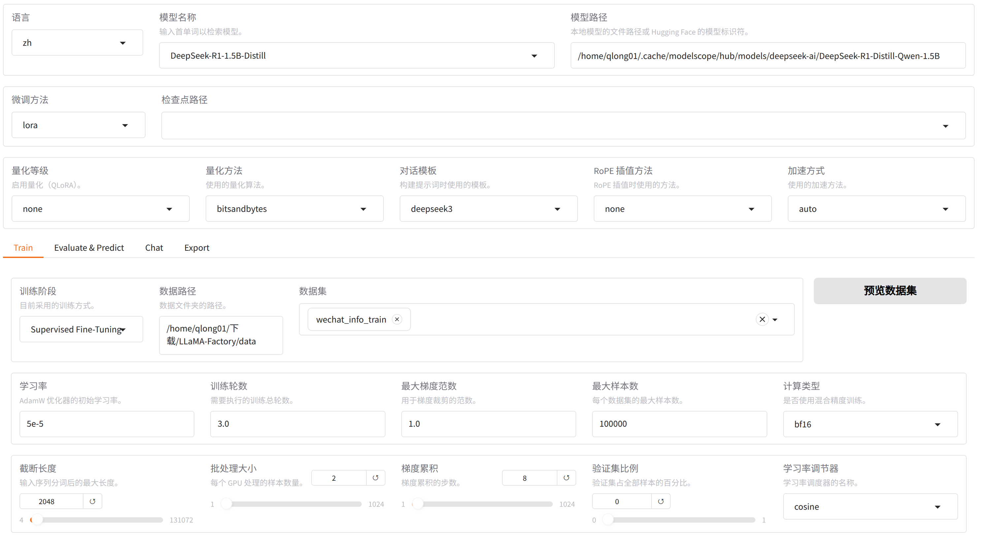

深度学习课程作业——大模型微调
Writted on 250515
Author: Jack_hui
介绍
本次作业实现的是调整deepseek-r1:1.5b对话风格，以更符合微信聊天，技术路线使用Llama-factory作为微调框架，数据来源于本人的微信聊天，为了更好地可视化模型微调效果，还配置UI界面，使大模型可支持图形化对话交互。接下来将从这三方面进行详细说明。
数据准备及预处理
微信聊天数据导出
首先需要导出相应的微信聊天数据，本次作业采用了第三方工具留痕 ，通过该工具导出的数据格式如下：
上图展示了使用第三方工具导出的文件结构，每个文件夹包含相应联系人的聊天信息
上图展示了文件夹中包含的内容，主要文件包括dev测试集以及train数据集，其中包含了json格式的聊天数据，部分数据如下所示：
该格式是sharegpt数据格式的变种，以符合微调Qwen系列模型要求的数据格式。此外导出的数据文件由于都是按联系人列出的，因此需要写脚本将这些json格式的数据文件进行合并，以满足微调数据量要求。
微信聊天数据增强
从微信导出的聊天数据通常都是日常聊天，缺乏上下文连贯性，非常无厘头，直接用导出的数据进行微调效果不佳，因此需要预处理以使上下文连贯，改善微调效果。本次作业利用阿里云百炼大模型平台提供的api，调用的大模型为qwen2.5-32b-instruct，该模型擅长处理json格式的数据，调用处理代码如下：
Python import os
import json
from openai import OpenAI
try :
client = OpenAI (
# 若没有配置环境变量，请用百炼API Key将下行替换为：api_key="sk-xxx",
api_key = os . getenv ( "DASHSCOPE_API_KEY" ),
base_url = "https://dashscope.aliyuncs.com/compatible-mode/v1" ,
)
# 1. 读取包含多个对话单元的JSON文件
with open ( "./data/train.json" , "r" , encoding = "utf-8" ) as f :
incomplete_chat = json . load ( f )
output_data = []
# 遍历处理每个对话单元
for index , chat_unit in enumerate ( incomplete_chat ):
if index > 80 :
conversations = chat_unit [ "conversations" ]
# 分离系统提示和对话内容
system_prompts = [ msg for msg in conversations if msg [ "role" ] == "system" ]
dialogue_messages = [ msg for msg in conversations if msg [ "role" ] in ( "user" , "assistant" )]
# 将原始聊天数据转换为 JSON 字符串
dialogue_messages = json . dumps ( dialogue_messages , ensure_ascii = False )
# 构造提示词，包含原始数据和详细的任务指令
prompt_instructions = f """
{ dialogue_messages }
上面是发生在朋友、同学、亲人或者陌生好友微信里的日常聊天对话的一个片段，该对话不完整。(注意：类似"[玫瑰]"这种是微信里的一种文字表情，代表说话人的心情或者状态，你也可以使用这些来丰富对话)
你的任务是添加两个人聊天话题的开始对话，补充一些内容使修改后的对话更加连贯、通顺。
并续写这段聊天对话，为了聊天对话的完整性，你可以删除或修改部分内容，使聊天更加完整、丰富、有始有终、具有连贯性、问答的相关性、话题的衔接性。
你只需要模仿聊天对话里的语气即可、注意讲话必须是具有很高的拟人度，符合人类日常说话习惯，对于"assistant"讲话比较少的内容可以适当扩充一些，看起来更完整。
输出格式与原格式相同必须是JSON列表格式，对话必须以"user"开始，必须以"assistant"结束，输出结果可以直接被解析成JSON，
**避免长篇大论，保持日常聊天风格**
**不要用嘿！、嗨！这种开头**
**不要有无关输出!!!**，**不要有无关输出!!!**，**不要有无关输出!!!**
"""
# 调用模型进行对话续写
completion = client . chat . completions . create (
# 模型列表请参见：https://help.aliyun.com/zh/model-studio/getting-started/models
model = "qwen2.5-32b-instruct" ,
messages = [
{ "role" : "system" , "content" : prompt_instructions },
{ "role" : "user" , "content" : "请根据上面的聊天片段进行补充和续写，在原有对话基础上补充2-3轮，使其连贯完整" }
]
)
# 处理结果
try :
new_dialogue = json . loads ( completion . choices [ 0 ] . message . content )
# 构建完整的对话单元（保留原始系统消息 + 新生成的对话）
processed_unit = {
"conversations" : system_prompts + new_dialogue
}
output_data . append ( processed_unit )
print ( f "成功处理第 { index + 1 } 条对话" )
except json . JSONDecodeError :
print ( f "⚠️ 第 { index + 1 } 条对话输出格式异常，已保留原始数据" )
output_data . append ( chat_unit ) # 保留原始数据
# 保存结果到文件
with open ( "./train.json" , "w" , encoding = "utf-8" ) as f :
json . dump ( output_data , f , indent = 2 , ensure_ascii = False )
print ( " \n 处理完成！结果已保存到 ./train_2.json" )
except Exception as e :
print ( f "错误信息： { e } " )
print ( "请参考文档：https://help.aliyun.com/zh/model-studio/developer-reference/error-code" )
本次作业在改善原始数据的上下文连贯性时，设计了比较详细的提示词。通过以上处理，微调前的数据准备工作已经大致完成，接下来将详细介绍微调过程的具体步骤。
基于LLama-factory进行模型微调
deepseek-r1:1.5b模型微调
通过LLama-factory这一框架可以实现大模型的低代码微调，操作界面大致如下，

首先加载需要微调的模型deepseek-r1:1.5b，该模型需要从HuggingFace 上拉取镜像，下载好后即可导入；
随后需要导入准备好的数据集，一方面需要将数据集放到/LLaMA-Factory/data目录下；另一方面需要修改/LLaMA-Factory/data目录下的文件dataset_info.json，增加如下代码：
JSON "wechat_info_train" : {
"file_name" : "small_train.json" ,
"formatting" : "sharegpt" ,
"columns" : {
"messages" : "conversations"
},
"tags" : {
"role_tag" : "role" ,
"content_tag" : "content" ,
"user_tag" : "user" ,
"assistant_tag" : "assistant" ,
"system_tag" : "system"
}
},
对于微调参数，本次课程作业采用官方文档推荐的参数，接下来即可开始微调。
deepseek-r1:1.5b模型导出
微调好后可以导出模型，不过需要注意的是通过LLaMA-Factory导出的模型与Ollama所需格式有区别，需要借助Llama.cpp的代码进行转换。
为了使在LLama-factory中微调的模型能够在Ollama中部署，需要先获取微调模型的safetensors格式文件，该文件可由LLama-factory导出后获得;随后需要将safetensors格式转换为gguf格式，该步骤可通过如下代码实现(需要先配置好LLama.cpp工具环境)：
Bash python convert_hf_to_gguf.py /home/qlong01/.cache/modelscope/hub/models/deepseek-r1_tune:1.5b\m odel.safetensors \
--outfile /home/qlong01/.cache/modelscope/hub/models/deepseek-r1_tune:1.5b\D eepseek-R1_Tune:1.5B-1.8B-Q4_K_M.gguf \
--outtype Q4_K_M
gguf格式的模型文件，即可利用Ollama进行部署，在利用Ollama之前，需要先编写Modelfile文件，代码如下：
Text Only
利用Modelfile文件，使用如下代码，Ollama可以部署对应的模型:
Bash create model_name -f /path/to/Modelfile
通过以上步骤，可以基本实现对大模型deepseek-r1:1.5b的微调。另外本次课程作业微调过程中对显存有一定要求，数据量比较大的情况下还是需要10G以上的显存。
UI界面配置
该步骤比较简单，利用Google浏览器提供的插件Page Assist即可实现，后台启动Ollama以后，可视化界面如下：
对话效果改善情况
Ollama模型截图
其中deepseek-r1:1.5b是通过Ollama直接拉取的模型；deepseek-r1_tune:1.5b是微调后经过16位量化的版本；
tune_deepseek-r1:1.5b是微调后经过4位量化版本，以便跟原始模型进行更好地对比，因为从Ollama中拉取的模型也是4位量化版本。
微调前后对话效果对比
deepseek-r1:1.5b对话截图
deepseek-r1_tune:1.5b对话截图
tune_deepseek-r1:1.5b对话截图
效果对比总结
可以很明显的发现，没有微调之前，模型更倾向于长篇大论，不符合微信聊天简短的风格；与之对应的，模型经过微调后，面对同样的问话，回答很明显的简短起来，也更切合微信聊天的场景。
对比微调后模型的不同量化版本也可以发现，在该场景下，量化对模型性能的影响还是比较明显，虽然4位量化版本聊天更加简洁，也更符合本人的对话风格，但上下文连贯性很差；而16位量化版本的效果就好很多，上下文连贯性也基本保证。
deepseek-r1:1.5b本身性能就比较差，因此本次作业重点还是评估微调前后对话是否符合预期目标，即是否切合微信聊天风格。
总的来说本次微调比较成功，通过提供的对话截图也可以证明效果比较明显，是一次很好的实践。